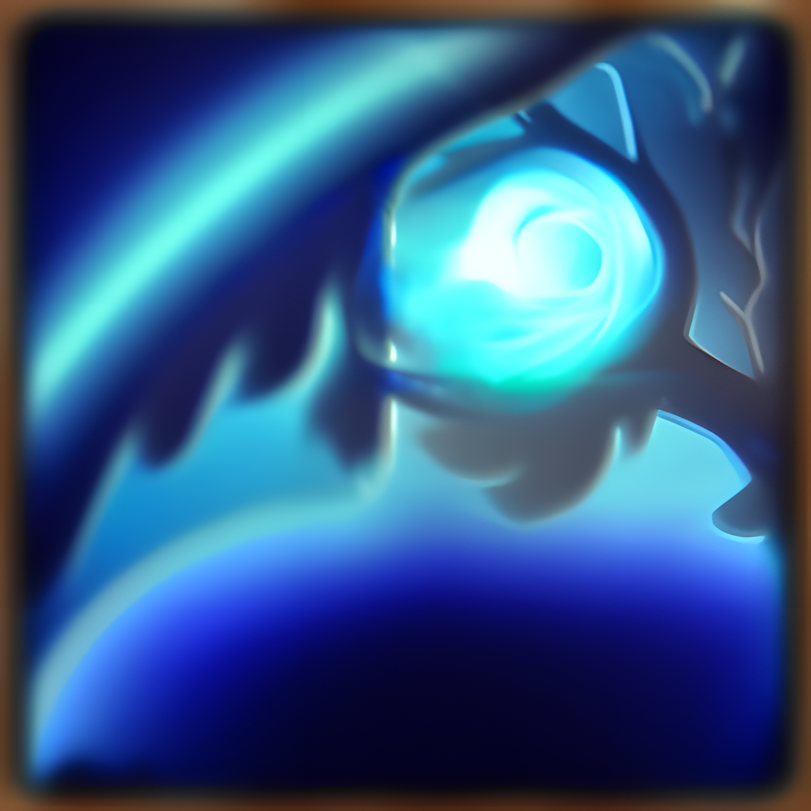
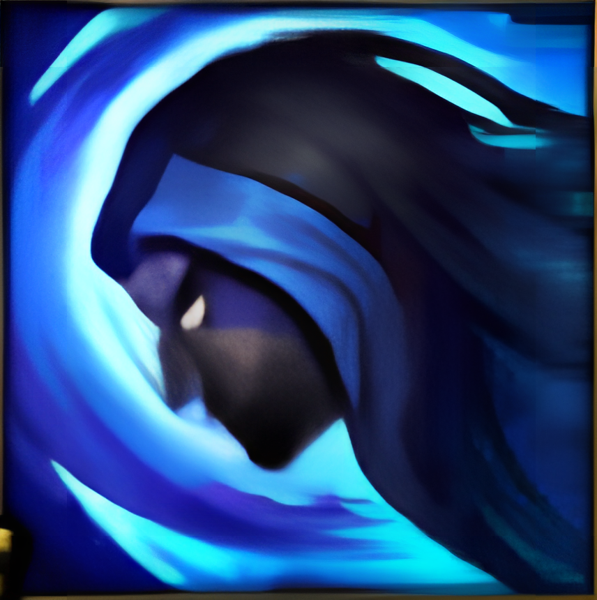

Shadow Assassin: Whenever Kayn deals damage to enemy champions, he also deals bonus magic
damage for a short duration, which refreshes after using Umbral Trespass.
Reaping Slash: Kayn slashes in a direction, dealing physical damage to all enemies hit.
Blade's Reach: Kayn throws his weapon in a direction, dealing physical damage to the first enemy hit
and slowing them.

Shadow Step: Kayn dashes a short distance and becomes untargetable for a brief period of time.
Umbral Trespass: Kayn becomes untargetable and dashes towards an enemy champion, dealing physical
damage to them upon arrival.